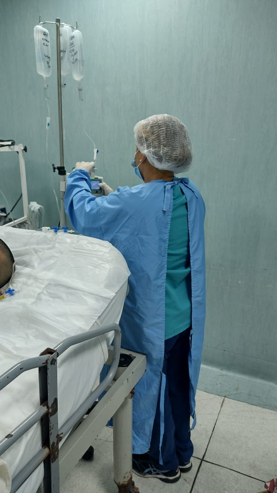
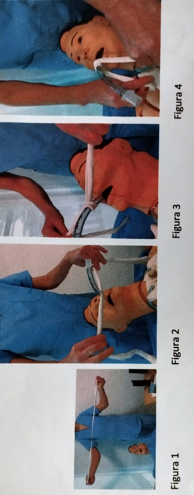
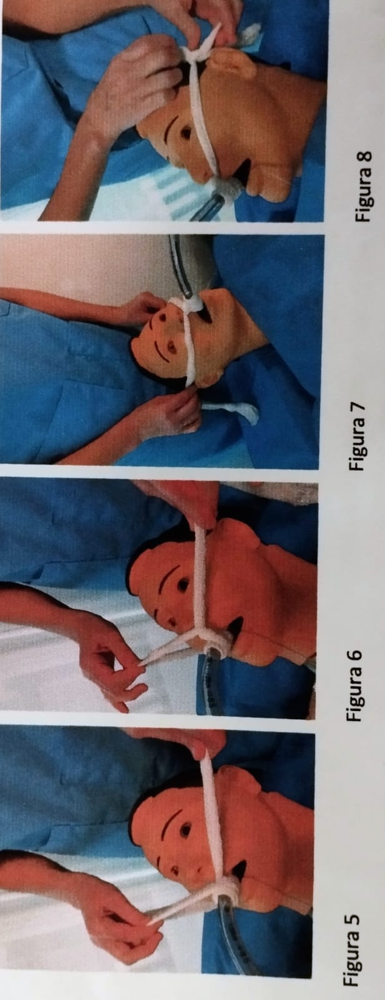
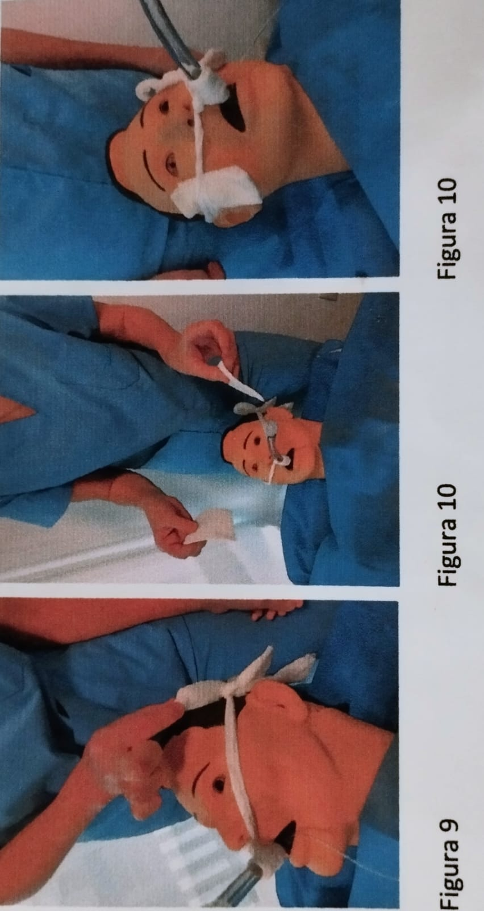
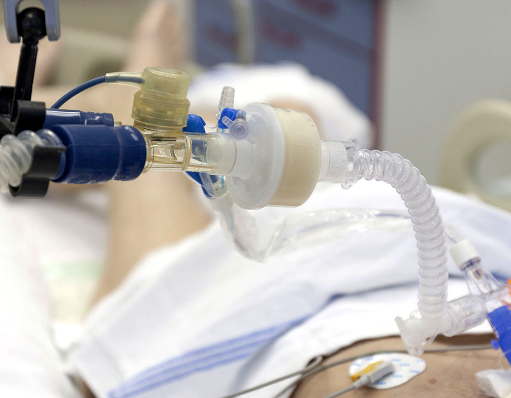
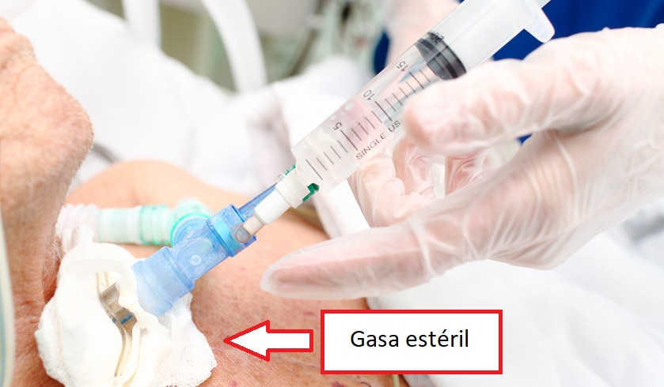

Cuidados del paciente en AVM
El desafío de aplicar instrumentos y algoritmos conservando la esencia del cuidado Enfermero, garantizando por intermedio de éstos, cuidados de calidad a partir de los cuales se establece la mejora contínua.
En la siguiente guía se plasmarán los diferentes procedimientos que hay que tener en cuenta a la hora de tratar al paciente en Asistencia Ventilatoria Mecánica.

Control de conexiones del AMV
- ☺ Verificar funcionamiento eléctrico del panel y del ventilador.
- ☺ Controlar que el respirador se encuentre enchufado.
- ☺ Control del panel de gases.
- ☺ Aire comprimido conectado y abierto.
- ☺ Oxigeno conectado y abierto.
- ☺ Sistema de aspiración funcionante.
- ☺ Tecla de encendido del respirador funcionante.
Interfases preparadas

- ☺ Filtro antibacterial con humidificador pasivo (HME) estéril.
- ☺ Filtro antibacterial estéril (colocar en válvula espiratoria).
- ☺ Tubuladura corrugada.


Fórmula para obtener el volumen adecuado
VT Peso teórico: altura en cm – 152.4x0.91+ 45.5 (m) 50(h).
EL RESULTADO se multiplica X6, 7, U 8. = VOLUMEN TIDAL.
Fr: Frecuencia respiratoria: 18-20 respiraciones por minuto
fiO2: fracción inspirada de oxígeno (50/100) de inicio
Cada paciente es particular y el medico modifica los parámetros de acuerdo al requerimiento individual del usuario.

Debemos tener preparado:
- ☺ Preparación del equipo de intubación.
- ☺ Preoxigenacion.
- ☺ Premediación.
- ☺ Inducción/ parálisis.
- ☺ Asegurar intubación correcta.
- ☺ Asegurar y fijar TET.
- ☺ Control y cuidados post intubación.
Fármacos de uso frecuente en la intubación rápida
¿Qué drogas necesitamos?

- Morfina:
Opioide de acción rápida, puede desencadenar liberación de histamina y vasodilatación e hipotensión resultante, la valoración de la respuesta hemodinámica del paciente a este fármaco, dolor y SaO2 deben medirse.
- Fentanilo:
Opioide de acción rápida con duración más breve que la morfina, no hipotensa tanto y puede administrarse a pctes con disfunción renal.
- Propofol:
Anestésico de acción breve, debe administrarse con vía periférica de gran calibre puede producir ardor, no afecta la percepción del dolor, si se administra por Baxter debe cambiarse cada 12 hs el circuito ya que es un excelente medio para la infección, vigilar TA por posible hipotensión y concentraciones de triglicéridos.
- Benzodiazepinas:
Midazolam, Lorazepam, Diazepam, disminuyen la ansiedad, sedantes. Efectos adversos: la sobredosis debe manejarse con flumazenil.
- Bloqueadores neuromusculares
Bromuro de vecuronio, pancuronio, succinilcolina, belisato
de cisatracurio:
Bloquea la transmisión del impulso de la unión mioneural. Disminuyen durante la respiración la actividad muscular voluntaria y los movimientos de la pared torácica, aunque los bloqueadores bloquean la transmisión nerviosa, el paciente escucha, siente dolor.
Drogas necesarias:
- ☺ Fentanilo, Morfina (analgesia).
- ☺ Midazolam, Propofol (sedante).
- ☺ Bloqueante neuromuscular, Rocuronio, Pancuronio, Succinilcolina, etc.
- ☺ Ampolla solución fisiológico para lavar.
Se administra primero la analgesia, a continuación, el sedante en último lugar el bloqueante neuromuscular, luego lavamos con solución fisiológica. Se debe repetir en voz alta cada vez que administramos cada uno de los medicamentos.
Drogas y dosis para la intubación de secuencia rápida:
1- Primer paso: ANALGESIA
a- PRIMERA ELECCIÓN
FENTANILO
Dosis 2-3 ug/Kg.
Presentación: 1 ampolla (5ml=250ug).
Dosis ejemplo paciente de 70Kg:de ½ a 1 amp bolo lento EV.
b- SEGUNDA ELECCIÓN
MORFINA
Dosis 0,05 mg/Kg.
Presentación: 1 ampolla (1ml=10mg).
Diluir ampolla con 9cc de SF (10ml=10mg).
Dosis ejemplo paciente 70Kg: 3,5mg.
2- Segundo paso: SEDACIÓN
a- PRIMERA ELECCIÓN
PROPOFOL
Dosis 2 a 2,5 mg/Kg
Presentación:
Ampolla al 1% 20ml/200mg (1ml=10mg).
Ampolla al 2% 50ml/1000mg (1ml=20mg).
Dosis ejemplo paciente 70Kg: 140mg.
a- SEGUNDA ELECCIÓN
MIDAZOLAM
Dosis 0,2 mg/Kg.
Presentación: 1 ampolla 3ml = 15mg.
Dosis ejemplo paciente 70 Kg: 14mg.
De no ser suficiente, pueden repetirse bolos de 0,07mg/Kg hasta lograr nivel de sedación deseado.
Para recordar el Propofol produce mayor hipotensión arterial que el uso de Midazolam.
3- Tercer paso: BLOQUEO NEUROMUSCULAR
SUCCINILCOLINA
Dosis: 1-1,5 mg/Kg.
Presentación: ampolla 10ml=500mg (50mg/ml).
Dosis ejemplo paciente de 70 Kg: 105mg.
Mesa de intubación completa
¿Qué materiales debemos preparar?

- ☺ Tubo endotraqueal: consta de conector universal para conectar al tubo, balón testigo y balón inflable, numeración, el tubo debe estar colocado 2cm por encima de la Carina.
- ☺ Bolsa de Ambú.
- ☺ Tubuladuras PVC.
- ☺ Tubos endotraqueales de varias medidas.
- ☺ Laringoscopio con distintas medidas de ramas.
- ☺ Guía.
- ☺ Guía de Eschmann.
- ☺ Cánula tubo Guedell – Mayo diversas medidas.
- ☺ Jeringas 10 CC.
- ☺ Guantes estériles.
- ☺ Antiparras.
- ☺ Barbijo.
- ☺ Almohadilla.
- ☺ Tira de sujeción de tubo.
- ☺ Estetoscopio.


Procedimiento
Asegurarnos que el paciente tenga acceso venoso. Para la administración de la medicación que sea de buen calibre, lo ideal son dos accesos periféricos de gran calibre, uno para administrar premediación y otro por si se deben administrar drogas inotrópicas.
- ☺ Corroborar buen funcionamiento del laringoscopio, que tenga pilas; con varias ramas que se adecue a la anatomía del paciente.
- ☺ Verificar que funcione la luz del laringoscopio.
- ☺ Abrir tubo endotraqueal por parte de arriba y entregar del lado derecho del operador.
- ☺ Control de integridad del balón antes de la intubación.
- ☺ Fijación, anchofast o vendas.
- ☺ Mascara y bolsa de ambú para la preoxigenacion (10 lts de O2).
- ☺ Monitor multiparamétrico para ver la hemodinamia del paciente.
- ☺ Control estricto de TAM, la media mayor o igual a 65 mmhg, (sistólica de 120).
Cuando se empiece a ventilar el paciente puede hipotensar por la medicación y por el ingreso de presión positiva al pulmón a la inversa, la presión positiva comprime las venas cavas superior e inferior, tener preparado para esto, Solución Fisiológica, o Solución Ringer y también Noradrenalina (4 amp en 250) son 16 mg.
Siempre es necesario que el procedimiento se realice en un entorno seguro con monitoreo continuo, capnógrafo, cardiodesfibrilador, drogas vasoactivas.
Control de intubación correcta
Después de realizar la intubación orotraqueal:
- 1) Se insufla el balón del tubo para evitar fugas y para proteger el árbol traqueobronquial.
- 2) Auscultación abdominal, ambos campos pulmonares, tráquea.
- 3) Control de capnógrafo.
- 4) Control de saturación de O2.
- 5) Control RX.
- 6) Semifowler (ver caso particular).
- 7) Colocar SNG u orogástrica (ver caso particular).
- 8) Preparación de analgosedacion según indicación.
- 9) Sujeción de seguridad.
- 10) Acondicionar al pacte y unidad.
La velocidad de infusión y dosis se ajusta según indicación médica
SEDACIÓN:
a- PRIMERA ELECCIÓN
MIDAZOLAM
Dosis 0,2-0,4 mg/Kg/Hs.
Preparación: 15 amp en 250ml SF (0,9mg por ml) a pasar por BIC.
Para paciente de 70 Kg a 15 ml/h y ajustar según nivel de sedación buscado.
b- SEGUNDA ELECCIÓN
PROPOFOL
Dosis de mantenimiento 0,5 a 3 mg/Kg/h.
Preparación: 5amp al 1% (1000mg) en 400 ml de dext 5% (2 mg por ml) a pasar por BIC.
Para paciente de 70 Kg a 35 ml/h ajustando velocidad de infusion según nivel de sedación buscado.
ANALGESIA:
a- PRIMERA ELECCIÓN
FENTANILO
Dosis de mantenimiento 0,6 a 2ug/Kg/H.
Realizar la preparación agregando las ampollas a los frascos de hidratación parenteral que tenga el paciente.
Ej.: pacte de 70 Kg a 0,6 ug/Kg/H con 2000 Ml/SF día agregar 1amp por frasco del plan.
b- SEGUNDA ELECCIÓN
MORFINA
Dosis de mantenimiento 2 a 3 mg/hora pudiendo en algunos pacientes llegar a 4 a 6 mg/H.
Realizar la preparación agregando las ampollas a los frascos de hidratación parenteral que tenga el paciente.
BLOQUEANTES NEUROMUSCULARES
PANCURONIO
Bloqueo neuromuscular efectivo dentro de los cuatro minutos de administrado.
El bloqueo dura 75 a 90 minutos.
Dosis: bolo intravenoso 0,06 a 0,08 mg/Kg (1 amp).
Dosis de mantenimiento 0,02 a 0,03 mg/Kg cada 1 o 2 horas.
Ej.: paciente de 70 Kg 8 ampollas de 250 ml SF a 11 ml/H.
-

- ☺ Cortar venda de 1 metro de largo aprox. (Foto 1).
- ☺ Colocarla a la mitad por debajo del tubo a la altura de la numeración 22 a 24 cm, evitando el contacto con la boca del paciente (Foto 2).
- ☺ Tomar los dos extremos de las tiras y entrelazar los alrededores del tubo (evitar comprimir el balón testigo). Una vez por arriba (Foto 3), luego por debajo (Foto 4) y luego otra vez hacia arriba (Foto 5 y 6). 
- ☺ Extender los extremos hacia arriba pasándolos por los pómulos y por encima de los pabellones auriculares evitanto el contacto con los mismos (Foto 8). 
- ☺ Rodear la cabeza del paciente tomando los dos extremos de las tiras y anudando hacia uno de los lados parietales en forma de medio moño (Foto 9).
- ☺ Al finalizar colocar una gasa en cada mejilla entre la piel y la tira para protección (Foto 10).
Aspirar secreciones puede realizase a través de dos sistemas uno cerrado y otro abierto
Aspiración abierta: este modo implica que se produzca la apertura de la vía aérea y cambio de sonda de aspiración cada vez.
Aspiración cerrada: no requiere desconexión ni apertura de la vía aérea, se utiliza una única sonda de mayor utilización.
Técnica de aspiración:
- ☺ Auscultar cuidadosamente.
- ☺ Ajustar analgosedacion.
- ☺ Verificar oximetría.
- ☺ Hiperoxigenar 1´FiO2 100%.
- ☺ Manos con lavado clínico, colocarse guantes y antiparras.
- ☺ Sonda de aspiración.
- ☺ Ingresar con la sonda el largo estimado del TET.
- ☺ No ingresar aspirando.
- ☺ La aspiración no debe exceder los 10´´si debe realizarse otro intento de aspiración ventilar previamente.
- ☺ No exceder tres intentos.
- ☺ Aspirar lago faríngeo, narinas y boca.
- ☺ Auscultar nuevamente.
- ☺ Controlar que FiO2 se encuentre en rango anterior a la aspiración.
- ☺ No instilar solución salina (aumenta el riesgo de atelectasias).
- ☺ Desechar material contaminado.
- ☺ Lavado de manos.
La regla número uno referente al cuidado del paciente en Asistencia Ventilatoria Mecanica es colocarse la siguiente vestimenta:

Pasos a seguir:
- 1) Colocar respirador en stand by.
- 2) Clampear el tubo orotraqueal.
- 3) Retirar filtro HME sucio y descartar.
- 4) Colocar filtro HME limpio.
- 5) Desclampear el tubo orotraqueal.
- 6) Desactivar modo stand by del AMV.
La regla número uno referente al cuidado del paciente en Asistencia Ventilatoria Mecanica es colocarse la siguiente vestimenta:
Pasos a seguir:
- 1) Colocar respirador en stand by.
- 2) Clampear el tubo orotraqueal.
- 3) Retirar set de aspiración.
- 4) Colocar nuevo set de aspiración.
- 5) Desclampear el tubo orotraqueal.
- 6) Desactivar modo stand by del AMV.
- ☺ Presión del cuff de TET adecuado, de 25 cmH2O y no mayor a 34cm H2O para prevenir la fuga, y evitar el ingreso de material contaminado de la faringe.
- ☺ Cabecera a 30 o 45° (especialmente si están recibiendo nutrición enteral).
- ☺ Higiene bucal con clorhexidina, para disminuir la colonización microbiana de la orofaringe una vez por turno.
- ☺ Cambio de fijaciones de tubo endotraqueal (cuando sea necesario) cuando se realiza la higiene bucal.
- ☺ Aspiración de secreciones preferentemente sistema cerrado cuando se ausculten secreciones.
- ☺ Cambio de interfases cuando se encuentren visiblemente sucias.
- ☺ Analgosedacion adecuada la presencia del TET causa dolor y disconfort.
Las dosis excesivas de analgésicos pueden producir intolerancia a la nutrición enteral por íleo, prolongación de la ventilación mecánica.